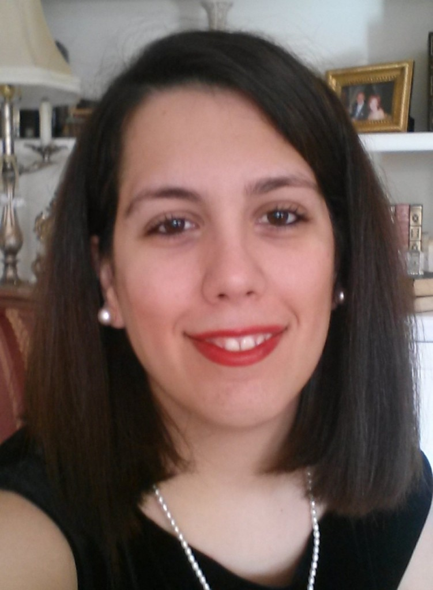

Evgenia (Eugenia) - Maria KontopoulouComputer Science Department |
Evgenia (Eugenia) - Maria KontopoulouComputer Science Department |
|  | My name is Evgenia (or Eugenia) and in August 2020 I received my Ph.D. in Computer Science from Purdue University, West Lafayette, Indiana. As you may understand from my name I am Greek. I was born and grew up in Kalamata, a city located at the southern part of the Greek mainland. Some people say that Kalamata (you may also know Kalamata from its olives) is a heaven on earth, so I feel lucky growing up in a paradise! In 2006, I moved to Patras, a beautiful (not like Kalamata though) city located at the midwestern Greek mainland. There, I studied at the Department of Computer Engineering and Informatics at University of Patras in Greece, where I obtained my Bachelor and Master in Computer Engineering. My advisor Professor Efstratios Gallopoulos gave me the opportunity to get into research from my senior undergraduate years. In 2016, I continued my studies at Purdue University as a PhD student under the supervision of Professor Petros Drineas. My research concentrates, (but it is not limited) on Randomized Numerical Linear Algebra (RandNLA) applied on Information Retrieval. I am passionate with the idea of using Statistics, mixed with Numerical Linear Algebra techniques in order to handle Big Data. Feel free to have a look at my CV for more information about me and my work |